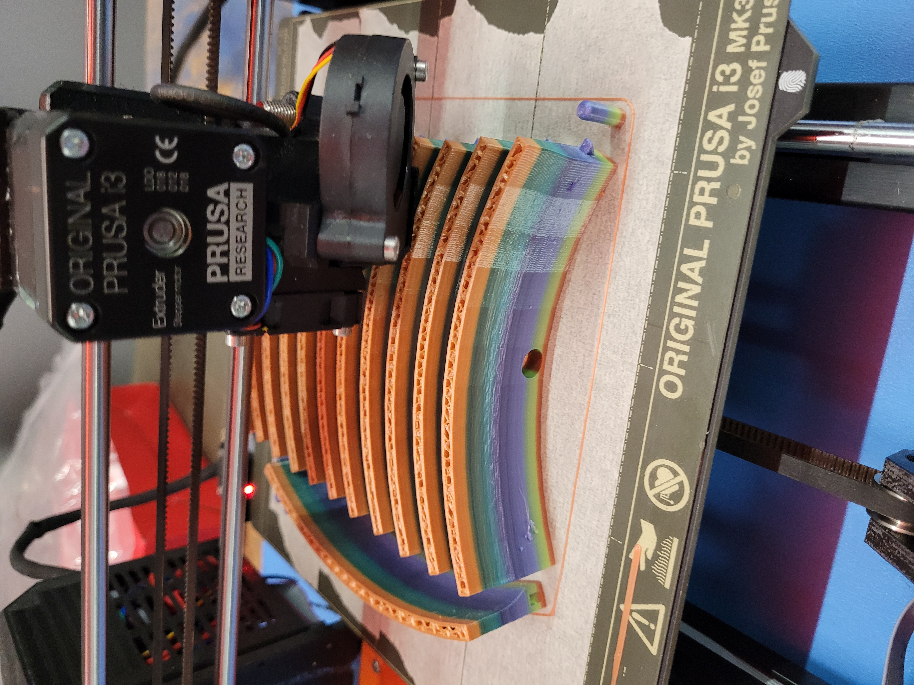
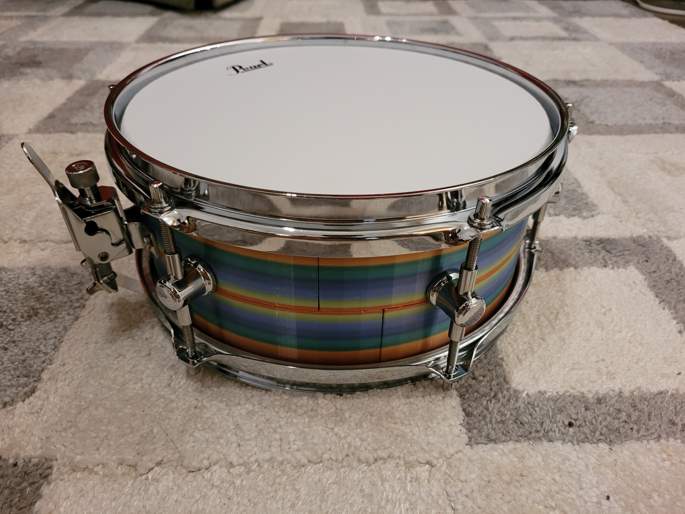
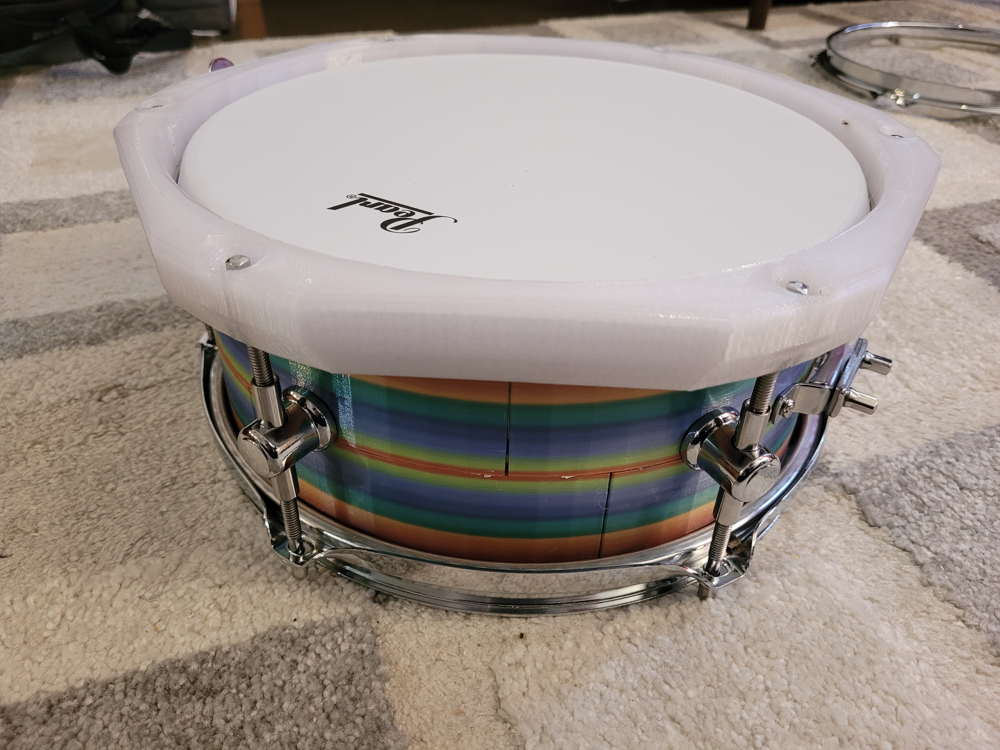
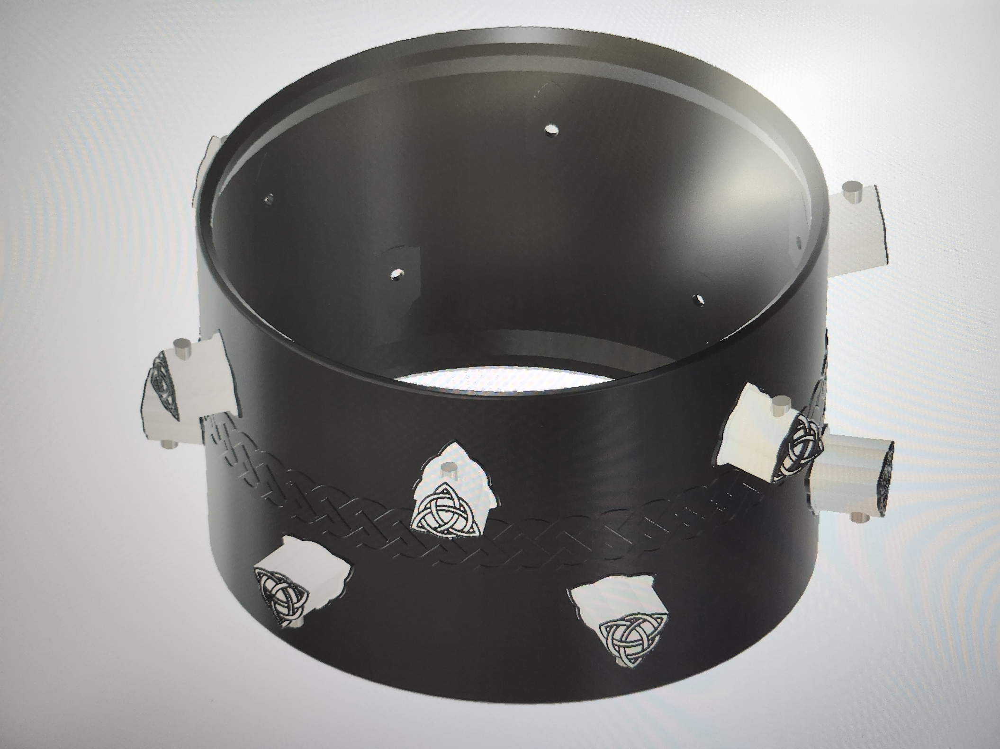
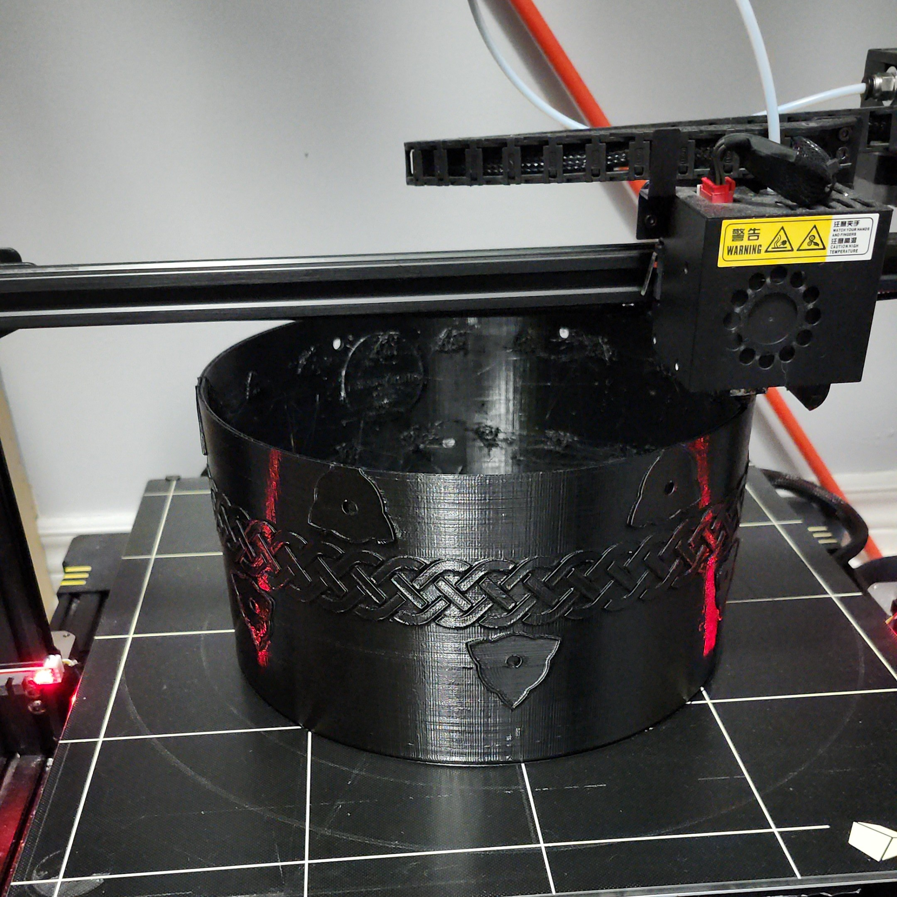
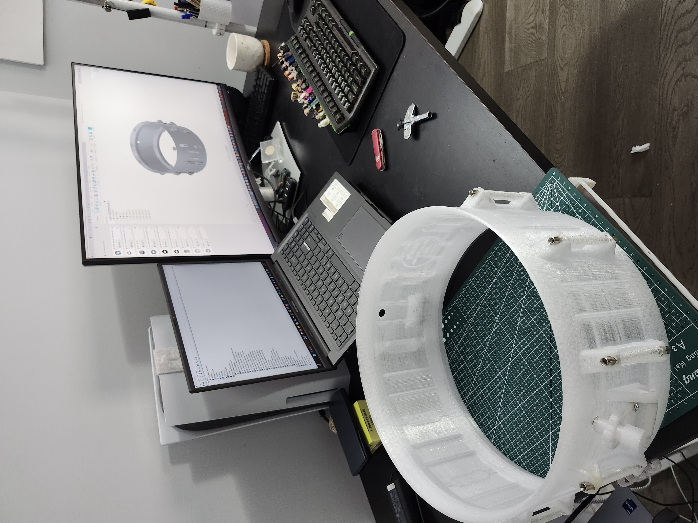

Our Story
Where innovation meets the heartbeat of music
Born to Redefine
What a Drum Can Be
Falcon Drums began with a single, audacious question: what if we could build a drum that conventional manufacturing simply cannot? We set out not just to make better drums — but to reimagine drum-making itself. Through advanced 3D printing, renewable material choices, and relentless engineering, Falcon Drums creates premium shells with shapes, precision, and sonic properties that were previously impossible to achieve at any price.
Why We Exist
Three beliefs that drive every decision we make
Renewable by Design
From day one, sustainability was not an afterthought. We chose materials and processes that minimize waste, reduce the carbon footprint of drum manufacturing, and can be responsibly sourced — without compromising on performance.
Engineering the Impossible
Bearing edges, shell geometry, internal acoustics — 3D printing unlocks a design freedom that wood lathes and metal presses will never match. We exploit every millimeter of that freedom to engineer sound, not just shape it.
Premium Sound for All
World-class drums have always come with world-class price tags. Our mission is to democratize that excellence — delivering flagship-level sonic performance through innovative manufacturing that keeps costs where they belong.
A Blueprint Printed in Layers
It started with a case study that changed everything. When Dan Pawlovich — drummer for Panic! At The Disco — toured the world with a snare drum 3D-printed by Stratasys Direct, he proved that additive manufacturing could produce an instrument worthy of arena stages. The key insight: by integrating hardware directly into the shell, you eliminate the metal-on-shell dampening that robs traditional drums of their natural resonance.
That idea ignited the Falcon Drums project. The first challenge was accessibility — industrial SLS printers are out of reach for most builders. So we started where any maker does: with a desktop FDM printer, a CAD file, and a hypothesis. If the shell could be printed in interlocking arc segments small enough to fit a standard build plate, a full-size drum was possible. And it worked.



The Rainbow Drum That Started It All
The very first successful Falcon Drums shell came off a Prusa i3 MK3 — the kind of printer you find in garages and makerspaces around the world. Each arc segment snapped together with precision-fitting joints, and when assembled the result was undeniable: a structurally sound, beautifully resonant snare drum that looked unlike anything the percussion world had ever seen. The vivid rainbow filament wasn't a gimmick — it was a declaration. We are not trying to imitate wood. We are building something new.
Even the hardware pushed boundaries. A set of drum hoops — traditionally die-cast metal or wood — was prototyped entirely in PETG, proving that 3D-printed components could handle the tension demands of proper drum tuning. Every part of the kit was on the table for reinvention.

Beyond the Snare: Building a Whole New Kit
Snare drums are the most complex piece of a drum kit — the bearing edge tolerance, the snare bed, the hardware integration. Conquering them first was deliberate. But Falcon Drums was never just about one drum.
With the snare solved, the focus shifted outward: toms, bass drums, everything. Piece by piece, one shell at a time, the goal became nothing less than a fully 3D-printed drum set. Every new drum is a new engineering challenge — different sizes, different resonance profiles, different structural demands. And every challenge gets solved the same way: with obsessive design, iteration, and uncompromising standards.
The tom below was the next milestone — printed integral, single shell, on a large-format printer that unlocked new size possibilities. Its voice is rich, focused, and unmistakably Falcon.


An Infinite Loop of Excellence
Falcon Drums does not ship drum shells. It ships iterations. Every design begins in CAD — millimeter by millimeter, bearing edge by bearing edge — then gets printed, physically tested, played, analyzed, and redesigned. It is a loop with no finish line, because perfection is a direction, not a destination.
This relentless cycle of design → print → test → improve is how Falcon Drums compressed decades of traditional drum-making wisdom into just five years of R&D. The shells that leave the workshop today stand alongside the finest flagship drums in the world — not because we copied them, but because we refused to stop until we surpassed them.

The Story Continues…
Five years in, the journey is just beginning. Every shell printed is a step closer to the complete Falcon drum set — and to proving, beyond doubt, that the future of percussion is additive. Stay tuned.
A Movement Growing Worldwide
We did not build in a vacuum. Across the globe, pioneering individuals and companies have been pushing the boundaries of drum manufacturing. We salute them — their courage to innovate inspired ours.
The Drum That Toured the World
Panic! At The Disco drummer Dan Pawlovich partnered with Stratasys Direct Manufacturing to build a snare with hardware consolidated directly into the shell via SLS 3D printing. By eliminating the metal-on-shell contact that dampens natural resonance, the drum achieved a purity of tone impossible with traditional construction. It toured arenas worldwide — and lit the spark for Falcon Drums.
Read the Case Study →3D-Printed Snares with Unique Sound Quality
Voxel Percussion has grown into one of the most recognized names in additive-manufactured percussion. Their show and studio snares demonstrate what is possible when a brand fully commits to 3D printing as its primary manufacturing method — offering unique acoustic properties and stunning visual designs that traditional builders simply cannot replicate.
Discover Their Story →A Legacy Brand Going Green
Even titans of the industry are paying attention. Pearl Drums — one of the most respected names in percussion for decades — has launched dedicated sustainability initiatives to address the environmental footprint of traditional drum manufacturing. When a company of Pearl's scale makes sustainability a pillar of its identity, it validates the path that Falcon Drums was built on from day one.
Explore Their Commitment →3D-Printed Snares in Retail
DrumsAndDroids brought 3D-printed percussion into mainstream retail through Denver Percussion. Their R2 snare — built from durable PETG with engineered bearing edges and structural infill — demonstrated to players everywhere that printed drums are real, playable, and available. Every builder who puts a printed drum in a player's hands advances the entire movement.
See the Drum →